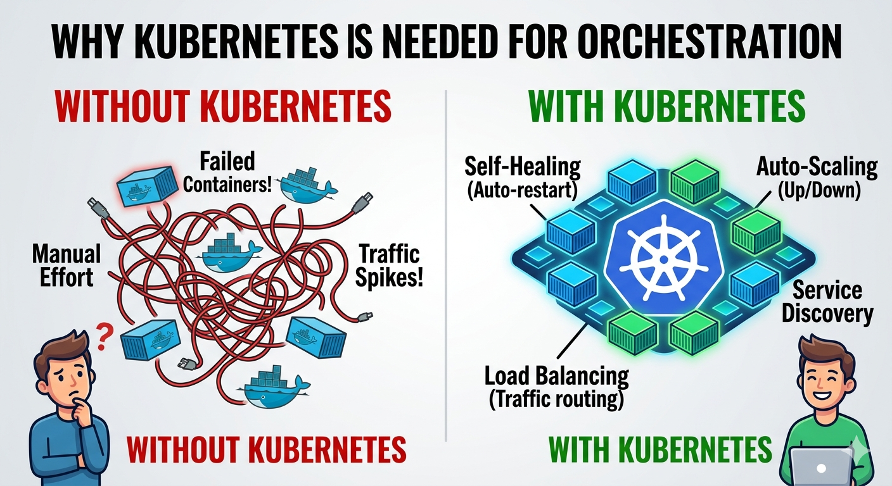
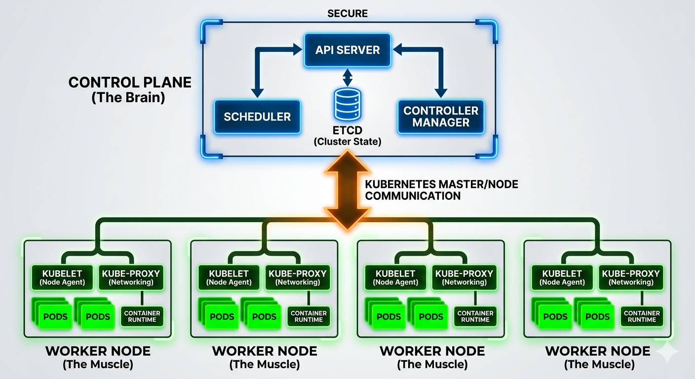
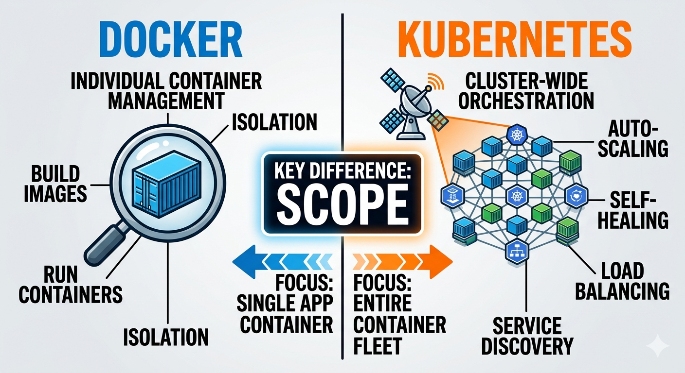

📌 What is Linux?
Linux is an open-source operating system that manages hardware and software resources on a computer.
- It acts as a bridge between hardware and applications
- Used in servers, cloud platforms, and DevOps environments
- Known for being stable, secure, and customizable
📁 Files in Linux
In Linux, everything is treated as a file:
- Text files
- Directories (folders)
- Devices (like disks)
📂 Directory Structure
Linux uses a hierarchical file system:
/
├── home/ ← User directories
├── etc/ ← Configuration files
├── var/ ← Variable data (logs, etc.)
└── bin/ ← Essential commandsImportant Directories:
/home→ User files/etc→ Configuration files/var→ Logs and variable data/bin→ Essential commands

💻 Basic Commands in Linux
Linux is often controlled using the command line (terminal).
Common Commands:
| Command | Description |
|---|---|
ls | List files |
cd | Change directory |
pwd | Show current directory |
mkdir | Create folder |
rm | Delete files |
cp | Copy files |
mv | Move/rename files |
Example:
cd /home
ls
mkdir project👤 Users and Groups in Linux
Linux is a multi-user system, meaning multiple users can use it safely.
Users:
- Each user has a username and home directory
- Example:
/home/tim
Groups:
- Users can belong to groups
- Used to manage permissions efficiently
Why it matters:
- Controls access to files and systems
- Important for security in DevOps

🔐 File Permissions and chmod
Every file in Linux has permissions:
-rwxr-xr--Breakdown:
r→ readw→ writex→ execute
Permission Groups:
- Owner
- Group
- Others
🔧 Changing Permissions with chmod:
chmod 755 file.sh- Owner → full access
- Group → read & execute
- Others → read & execute
💡 Why Permissions Matter:
- Protect sensitive data
- Control who can run scripts
- Essential for secure DevOps pipelines

🚀 Summary
🎯 Key Takeaway
👉 If you understand Linux, you understand the core environment where DevOps happens

📌 What is a Network?
A network is a group of computers and devices connected together to share data and resources.
- Allows communication between systems
- Can be wired (cables) or wireless (Wi-Fi)
- Essential for internet, cloud, and DevOps systems
🧭 IP Address
An IP Address is a unique identifier for a device on a network — like a home address, but for computers.
192.168.1.1Types of IP:
- Public IP → Used on the internet
- Private IP → Used inside local networks
🏠 LAN (Local Area Network)
A LAN is a network that connects devices in a small area.
Examples:
- Home network
- School or office network
Characteristics:
- High speed
- Limited geographic area
- Usually privately owned
🌍 WAN (Wide Area Network)
A WAN connects networks over a large geographic area.
Example:
- The Internet (largest WAN)
Characteristics:
- Covers cities, countries, or continents
- Slower than LAN (generally)
- Connects multiple LANs together

🌐 HTTP (HyperText Transfer Protocol)
HTTP is a protocol used to transfer data between a web browser and a server.
- Used when you visit websites
- Works on port 80
- Data is sent in plain text
http://example.com🔒 HTTPS (HyperText Transfer Protocol Secure)
HTTPS is the secure version of HTTP.
- Protects sensitive information (passwords, payments)
- Works on port 443
- Encrypts data in transit using TLS/SSL
https://example.com📦 TCP (Transmission Control Protocol)
TCP ensures reliable data delivery.
Features:
- Data is sent in order
- Errors are checked and corrected
- Guarantees delivery
Use Cases:
- Web browsing
- File transfers
⚡ UDP (User Datagram Protocol)
UDP sends data faster but without guarantees.
Features:
- No error checking
- No delivery confirmation
- Faster than TCP
Use Cases:
- Video streaming
- Online gaming
🔄 TCP vs UDP
| Feature | TCP | UDP |
|---|---|---|
| Speed | Slower | Faster |
| Reliability | High | Low |
| Error Checking | Yes | No |
| Use Cases | Websites, APIs | Streaming, gaming |

🚀 Summary
🎯 Key Takeaway
👉 Networking is the foundation of DevOps, because all systems, services, and tools communicate over networks
📌 What is Version Control?
Version Control is a system that helps track changes in files over time.
- Keeps history of changes
- Allows reverting to previous versions
- Enables collaboration between multiple developers
🧰 What is Git?
Git is a distributed version control system.
- Tracks changes in code
- Works locally on your computer
- Fast and efficient
- Widely used in DevOps and software development
Key Idea:
Every developer has a full copy of the project history
🌐 What is GitHub?
GitHub is a cloud platform that hosts Git repositories.
- Stores your code online
- Enables collaboration
- Provides tools like issues, pull requests, and actions
Other similar platforms:
- GitLab
- Bitbucket
⚖️ Git vs GitHub
| Feature | Git | GitHub |
|---|---|---|
| Type | Tool | Platform |
| Runs on | Local machine | Cloud |
| Purpose | Version control | Code hosting & collaboration |
| Internet needed | No | Yes |

💻 Basic Git Commands
These are the most important commands every beginner should know:
| Command | Description |
|---|---|
git init | Initialize a repository |
git add | Add files to staging |
git commit | Save changes |
git push | Upload to GitHub |
git pull | Download changes |
Example Workflow:
git init
git add .
git commit -m "Initial commit"
git push origin main
🌿 Branching and Merging
Branching allows you to work on different features without affecting the main code.
Why use branches?
- Work safely on new features
- Fix bugs without breaking main code
Common Branch:
main(ormaster) → main version of the project
Example — Create & switch branch:
git branch feature-login
git checkout feature-loginMerging — combine changes into another branch:
git merge feature-login
🤝 Collaboration using Pull Requests
A Pull Request (PR) is a way to propose changes to a repository.
Workflow:
- Create a branch
- Make changes
- Push to GitHub
- Open a Pull Request
- Review and merge
Why Pull Requests?
- Code review by team members
- Discuss changes before merging
- Improve code quality
🚀 Summary
🎯 Key Takeaway
👉 Git & GitHub are the backbone of collaborative DevOps — every change, every deploy starts with a commit
📌 What is Jenkins?
Jenkins is an automation server used in DevOps to automate tasks like:
- Building code
- Testing applications
- Deploying software
🤔 Why Jenkins is Used in DevOps
- Automates repetitive tasks
- Reduces human errors
- Integrates with many tools (Git, Docker, etc.)
👉 Key Idea: Automation = Speed + Consistency
🏗️ Jenkins Architecture
Jenkins uses a Controller–Agent model to manage and distribute work:
Manages jobs, schedules tasks, monitors agents
Executes the actual build & test tasks
Flow:
Controller → assigns job → Agent
Agent → runs tasks → reports back to Controller🔧 Jenkins in Action
Basic CI/CD flow triggered by Jenkins:
- Developer pushes code to GitHub
- Jenkins detects the change automatically
- Jenkins runs build & tests
- Jenkins deploys the application
Pipeline Flow:
GitHub Push → Jenkins detects → Build → Test → Deploy🚀 Summary
🎯 Key Takeaway
👉 Jenkins is the engine of automation in DevOps — it turns manual steps into a reliable, repeatable pipeline
📌 What is Docker?
Docker is a platform that allows you to build, run, and ship applications in containers.
- Packages app + dependencies together
- Runs the same everywhere (dev, test, production)
- Lightweight and fast
⚖️ Containers vs Virtual Machines
- Share the host OS
- Lightweight and fast
- Start in seconds
- Have their own OS
- Heavier and slower
- Take more resources
🧱 Docker Architecture
Main components:
- Docker Client → where you run commands
- Docker Daemon → runs containers
- Docker Registry → stores images (e.g., Docker Hub)
Flow:
Client → Daemon → Container
📦 Docker Images and Containers
- Blueprint/template of an application
- Read-only
- Running instance of an image

📝 Dockerfile Basics
A Dockerfile is a script to build Docker images.
FROM python:3.10
WORKDIR /app
COPY . .
RUN pip install -r requirements.txt
CMD ["python", "app.py"]💻 Basic Docker Commands
| Command | Description |
|---|---|
docker build | Build image |
docker run | Run container |
docker ps | List containers |
docker pull | Download image |
docker build -t myapp .
docker run -p 5000:5000 myapp
📌 What is Kubernetes?
Kubernetes is an open-source container orchestration platform used to manage and automate containerized applications.
It helps with:
- Deploying containers
- Scaling applications
- Managing container health
❓ Why Kubernetes is Needed
Managing a few containers with Docker is easy, but managing hundreds is difficult. Kubernetes helps by:
- Automatically restarting failed containers
- Scaling applications up or down
- Distributing traffic between containers

🏗 Kubernetes Architecture
Kubernetes works using Master Node and Worker Nodes
Master Node
Controls the cluster:
- API Server
- Scheduler
- Controller Manager
Worker Node
Runs the application containers inside Pods

📦 Pods, Services, Deployments
The smallest unit in Kubernetes. Runs one or more containers.
Provides a stable way to access Pods. Balances traffic between them.
Manages Pod replicas and updates. Keeps the desired number running.
📈 Scaling Applications
One major feature of Kubernetes is scaling.
- Increase Pods when traffic grows
- Reduce Pods when traffic decreases
Example:
kubectl scale deployment app --replicas=3🔄 Kubernetes vs Docker
| Feature | Docker | Kubernetes |
|---|---|---|
| Main Role | Run containers | Manage containers |
| Scaling | Manual | Automatic |
| Load Balancing | Limited | Built-in |
| Use Case | Single container apps | Large distributed apps |

⚙️ Basic Kubernetes Workflow
- Build container image using Docker
- Deploy container to Kubernetes
- Kubernetes creates Pods
- Services expose the application
- Deployments manage scaling and updates
🚀 Summary
📌 What is Ansible?
Ansible is an automation tool used to manage and configure servers.
- Open-source
- Simple and easy to use
- Works over SSH
🧠 Configuration Management
Keeping systems consistent and correctly configured:
- Installing software
- Updating servers
- Managing settings
🤖 Agent vs Agentless
Requires software installed on each server.
No software needed on target machines. Uses SSH to connect.
✅ Ansible is agentless, making it simple and lightweight
🏗️ Ansible Architecture
Ansible has a simple structure:
- Control Node → where Ansible runs
- Managed Nodes → servers being controlled
Control Node ---> Managed Nodes📜 Playbooks and YAML
Ansible uses Playbooks to define tasks.
- Written in YAML (easy to read)
- Describe what actions to perform
Example Playbook:
- name: Install nginx
hosts: web
tasks:
- name: Install package
apt:
name: nginx
state: present🗂️ Inventory
An inventory file tells Ansible which servers to manage.
- Groups servers together
- Used by playbooks
Example inventory.ini:
[web]
192.168.1.10
192.168.1.11🚀 Summary
🛠️ What is Terraform?
Terraform is a tool used to build and manage infrastructure using code.
- Created by HashiCorp
- Works with cloud providers (AWS, Azure, GCP)
- Uses
.tfconfiguration files
🔌 Providers in Terraform
Providers allow Terraform to interact with platforms like AWS, Azure, and Google Cloud.
Example:
provider "aws" {
region = "us-east-1"
}🧱 Basic Terraform Configuration
Terraform uses simple configuration blocks to define infrastructure:
Example (AWS EC2 Instance):
resource "aws_instance" "example" {
ami = "ami-123456"
instance_type = "t2.micro"
}💡 This simple block creates a complete virtual machine in the cloud!
⚙️ Terraform Commands
| Command | Purpose |
|---|---|
terraform init | Initialize project & download providers |
terraform plan | Preview changes before applying |
terraform apply | Apply changes to the cloud |
🚀 Summary
.tf config filesterraform plan prevents mistakes📌 Why Python in DevOps?
Python is widely used in DevOps because it is:
- Simple and easy to read
- Great for automation and scripting
- Works well with APIs and system tools
📦 Data Types
Python has built-in data types used to store information:
| Type | Description | Example |
|---|---|---|
| List | Ordered collection | [1, 2, 3] |
| Dictionary | Key-value pairs | {"name": "Tim", "role": "DevOps"} |
| Tuple | Immutable (cannot change) | (1, 2, 3) |
| Set | Unique values only | {1, 2, 3} |
| String | Text | "Hello" |
| Integer / Float | Numbers | 10 or 3.14 |
| Boolean | True/False | True |
🔀 Control Statements
Used to make decisions in code:
if x > 10:
print("Large")
elif x == 10:
print("Equal")
else:
print("Small")🔁 Loops
Used to repeat tasks:
For Loop
for i in range(3):
print(i)While Loop
while x < 5:
x += 1🧩 Functions
Functions group reusable code:
def deploy():
print("Deploying app")📦 Modules
Modules are files with reusable code:
import os
from openai import OpenAI